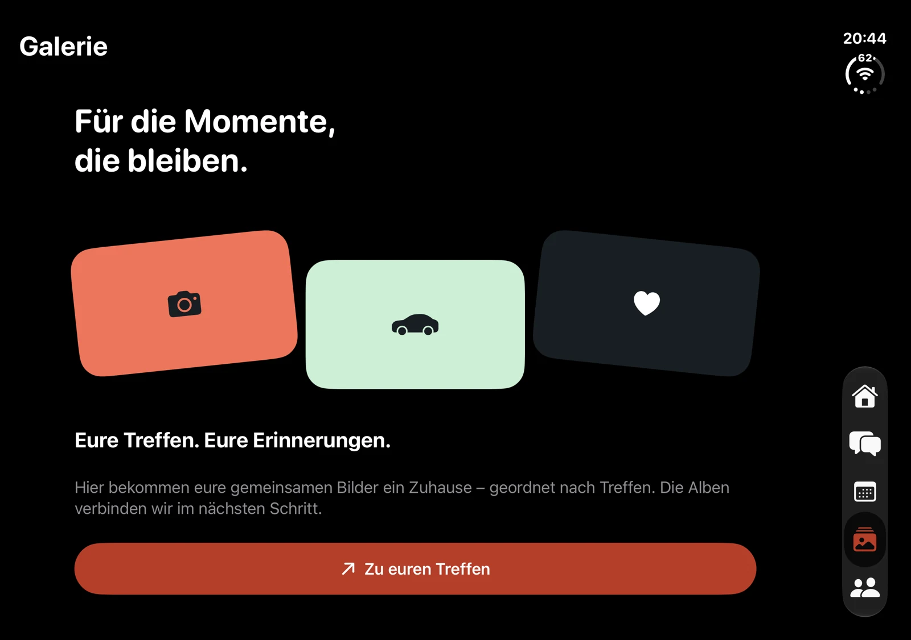
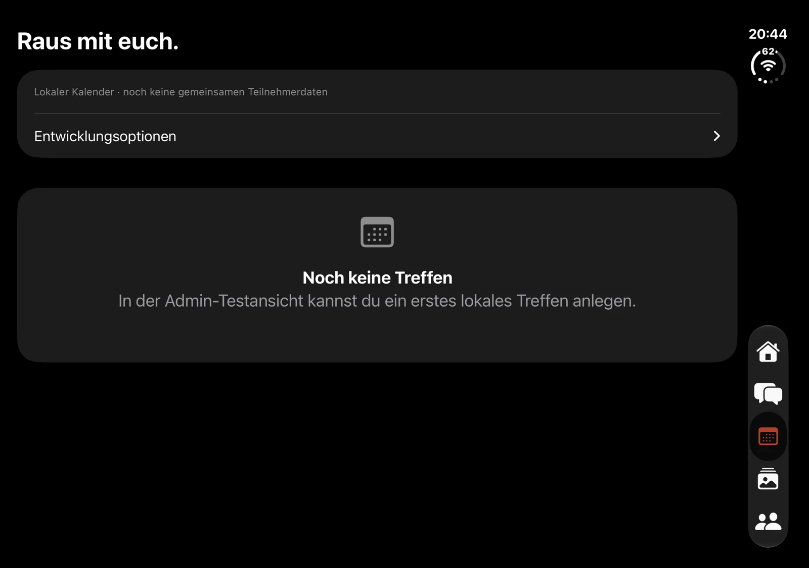

Profil & Fahrzeuge
Ein eigenes Profil mit freiwilligen Angaben und Bild anlegen. Fahrzeuge mit Marke, Modell, Baujahr, Farbe, Leistung, Umbauten und ausgewählten Fotos auf dem Gerät verwalten.
MCA · EIN PROJEKT VON NW VISUALS
Eine App für die eigene Auto-Crew: Fahrzeuge zeigen, Treffen organisieren und gemeinsame Momente festhalten. Entwickelt für eine einzige private Gruppe.
Lokaler Prototyp · kein öffentliches Netzwerk und keine offene Gruppenregistrierung. Gemeinsame Online-Funktionen folgen erst mit einer abgesicherten Serveranbindung.

01 / DAS PROJEKT
Der aktuelle Prototyp ist lokal nutzbar. Welche Bereiche bereits Daten speichern und welche noch eine Vorschau sind, ist hier getrennt beschrieben.
Ein eigenes Profil mit freiwilligen Angaben und Bild anlegen. Fahrzeuge mit Marke, Modell, Baujahr, Farbe, Leistung, Umbauten und ausgewählten Fotos auf dem Gerät verwalten.
Lokale Treffen mit Zeit und Treffpunkt anlegen und bearbeiten. Termine können nach Bestätigung in den Systemkalender übernommen, Treffpunkte an eine Karten-App übergeben werden. Gemeinsame Zusagen und Kapazitätsverwaltung benötigen noch den Server.
Die Chat-Oberfläche lässt sich ausprobieren. Nachrichten werden noch nicht an andere Mitglieder versendet und bleiben nur bis zum App-Neustart erhalten. Es gibt noch keine Live-Anwesenheit oder echten Lesebelege.
Die Galerie zeigt das Konzept für nach Treffen geordnete Alben. Die Mitgliederliste enthält gekennzeichnete Beispielprofile. Gemeinsame Alben, Einladungen, Freigaben und Push sind noch nicht produktiv angebunden.
02 / APP-AUFNAHMEN
Originalaufnahmen vom 31. Oktober 2026 zeigen den damaligen Entwicklungsstand. Keine privaten Mitglieder-, Fahrzeug- oder Treffpunktdaten werden gezeigt. Die spätere Systemnavigation kann je nach Gerät und Fenstergröße abweichen.

03 / ENTWICKLUNGSSTAND
Dokumentierter Quellstand: MCA 0.6.4. Native iPhone-Oberfläche und separater Android-Stand. Profil, Fahrzeuge und Treffen werden lokal gespeichert. Die native Navigation passt sich den vom System unterstützten Anzeigeformen an.
Für den späteren gemeinsamen Betrieb ist eine einzige private, markenunabhängige Gruppe vorgesehen – Zugang per Einladung und Admin-Freigabe. Die serverseitige Anmeldung, Rollenprüfung, Medienablage, Echtzeitkommunikation und Push sind noch nicht umgesetzt. Lokale Entwicklungsoptionen ersetzen keine Zugangskontrolle.
Noch kein öffentliches Store-Angebot. Kompilierung, Tests auf iPhone und Android sowie die abgesicherte Serveranbindung müssen vor einer Veröffentlichung vollständig geprüft werden.
FRAGEN ZUM PROJEKT?
Informationen zum Entwicklungsstand, zu lokalen Daten und zur Löschung.